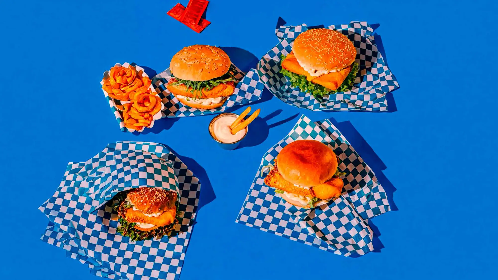
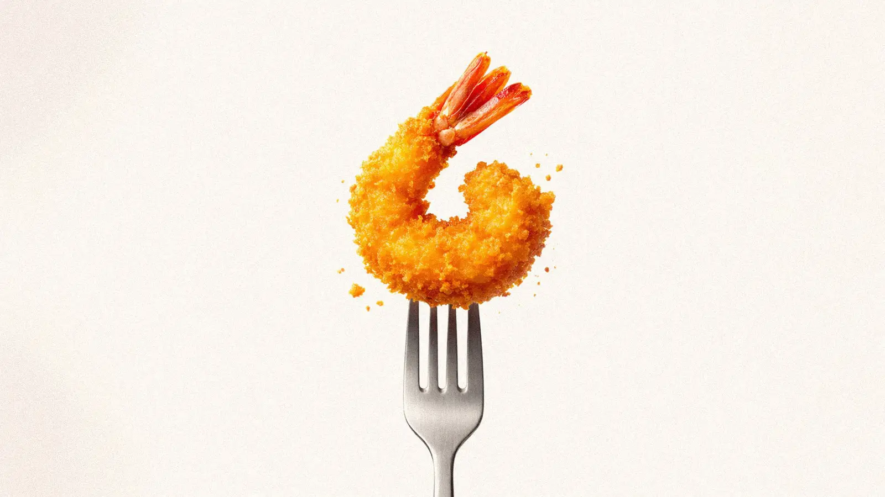
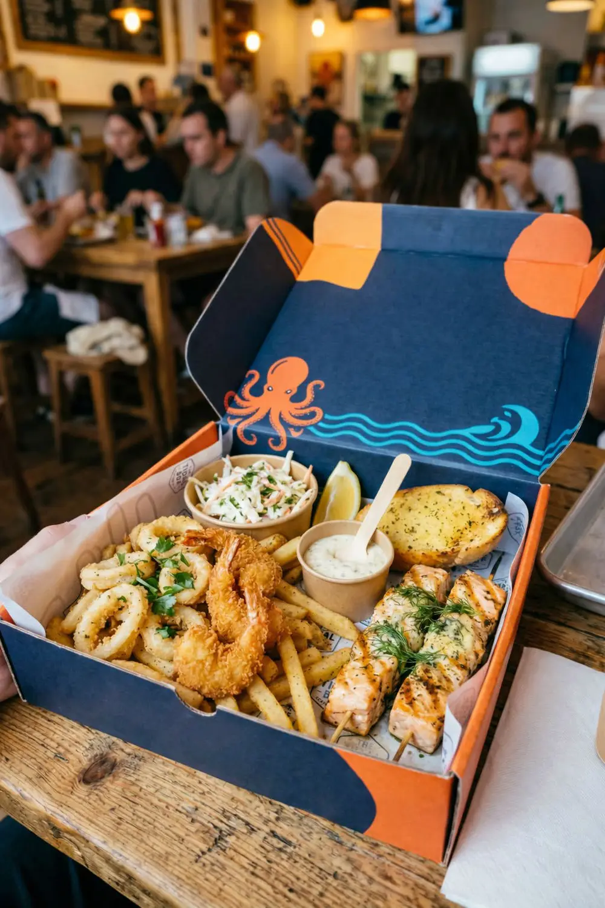
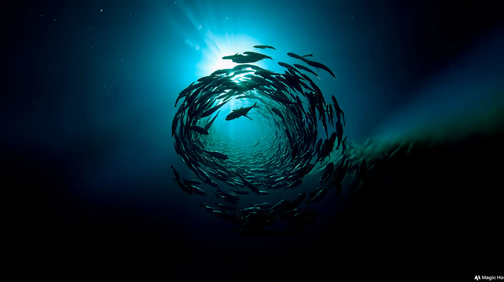
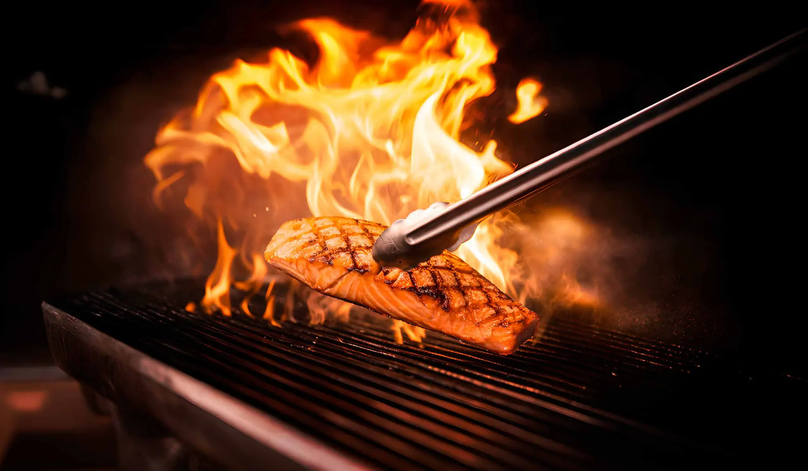
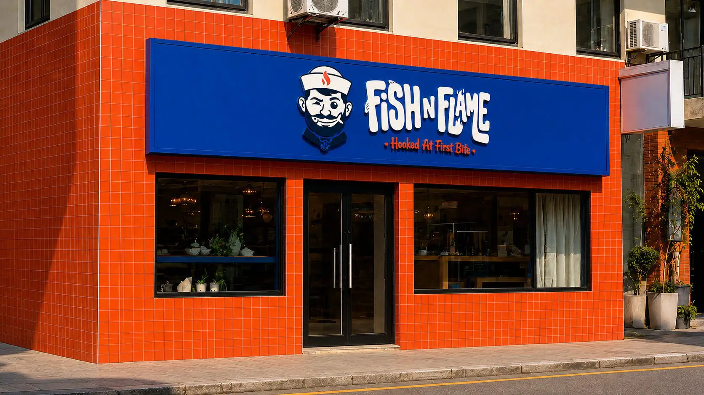
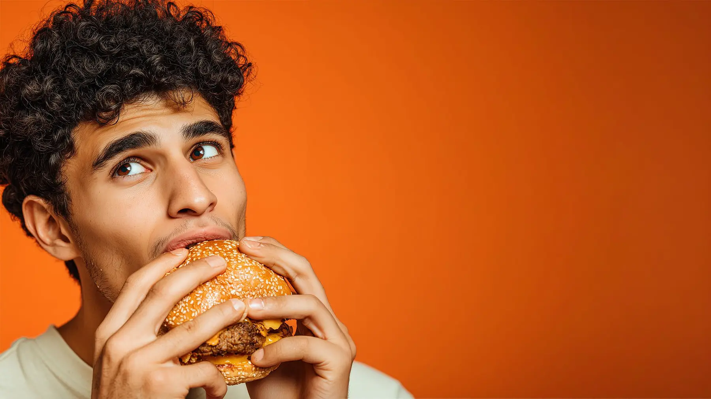
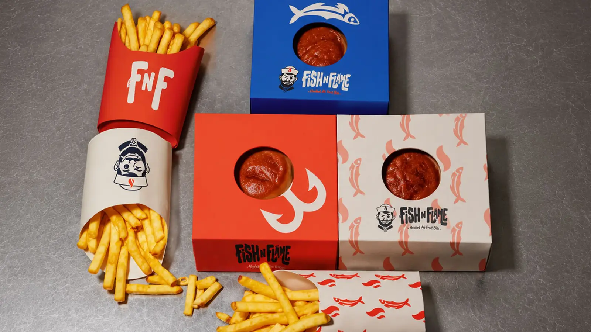
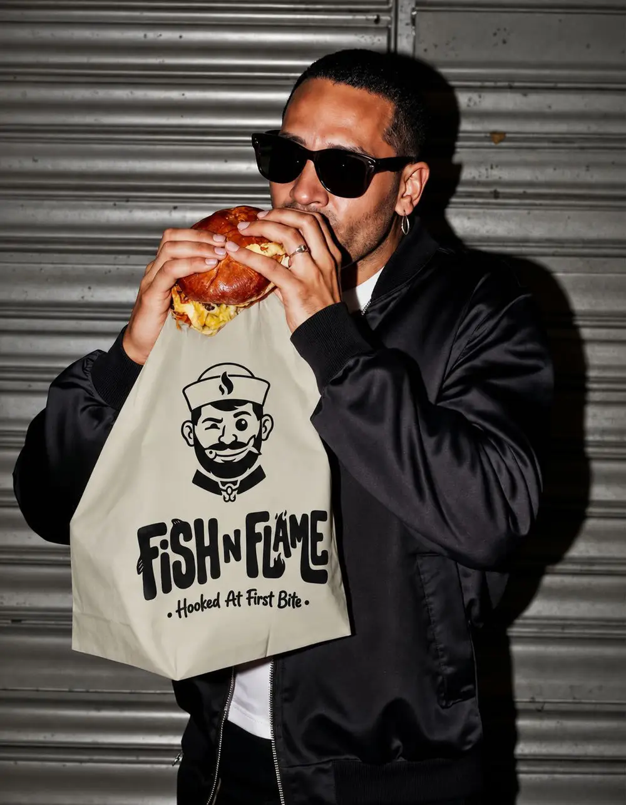
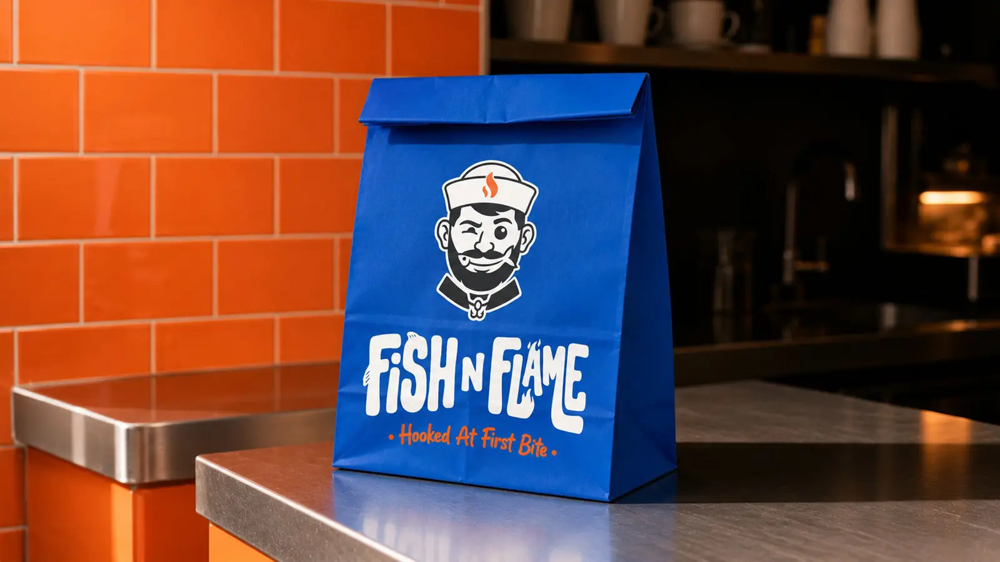

Protein-Rich
A satisfying source of quality protein that fuels busy days without the heaviness.

India's Sea-Fish-Focused QSR · From Blue Wave Foods
Flame-Grilled. Crispy. Fresh. Fish.
Delicious, affordable fish food, rich in protein and omega-3 fatty acids, for consumers across India.
The Concept
FishnFlame is India's sea-fish-focused Quick Service Restaurant (QSR) brand from Blue Wave Foods, based in Andhra Pradesh. It started with a simple but powerful vision: to make delicious, affordable fish-based food, rich in protein and omega-3 fatty acids, accessible to consumers across India.
Global QSR brands have built massive consumer businesses around chicken, burgers and other mainstream foods. Fish is still an underdeveloped category in India's organised QSR market.
FishnFlame aims to bridge this gap with a modern, youthful and scalable fish-food brand that brings together great taste, convenience, consistency and affordability.



Why Fish
Fish is one of nature's most complete foods. FishnFlame brings that goodness to the counter in fast, familiar and craveable QSR formats, so eating well becomes an everyday habit.
A satisfying source of quality protein that fuels busy days without the heaviness.
Naturally present in fish and widely valued for heart and brain health.
Fish is one of the few foods that naturally contains the "sunshine vitamin".
Bold flavour that fills you up and still feels good after the last bite.
Our Recipe for Success

Exciting fish-based products that appeal to today's consumers, especially Gen Z, millennials and young families.
Standardised recipes, portion control, centralised sourcing and strict food-safety processes deliver the same experience at every outlet.
Fish as an everyday QSR option, not something reserved for premium seafood dining.
Standardised store design, simplified kitchen processes, centralised procurement and supply-chain systems, all designed for rapid multi-city expansion.
A vibrant, contemporary and memorable identity that makes FishnFlame a destination for fish lovers and an exciting alternative to conventional chicken and burger QSRs.
Built for Scale
The FishnFlame business model is designed for national expansion from day one.
The network of approximately 700 outlets can include several formats, so FishnFlame can enter different catchments while keeping one brand identity and one operating system.

Powered by Blue Wave Foods
FishnFlame is being developed by Blue Wave Foods, drawing on its understanding of the fish and seafood ecosystem to build an integrated business model.
This integration gives FishnFlame an important competitive advantage: a reliable, standardised supply chain that grows with the outlet network.

Our Bigger Purpose
FishnFlame sets out to create a new organised category in Indian QSR: Fish Food.
The long-term objective is to make fish as familiar and convenient to Indian consumers as burgers, fried chicken and other mainstream QSR products.
“I want fish, let's go to FishnFlame.”
The future we envision, across India
Our Vision
To build the most loved and recognised fish-food QSR brand, with 700+ outlets pan-India.
A nationwide network across metros, tier-1, tier-2 and emerging cities. The ambition is to match the brand recall, operational discipline, consistency and scalability of leading global QSR chains, while owning a distinctive category: FISH.
With the right execution, FishnFlame can become a category-defining Indian seafood QSR brand, bringing the taste of fish to millions of consumers in a format that is fast, affordable, convenient and scalable.



Promoters & Directors
The people steering FishnFlame from the coast of Andhra Pradesh to the rest of India.
Promoter & Managing Director
Brings years of hands-on experience across fish sourcing, chilled imports and exports, and the wider seafood ecosystem.
Director
Leads the build-out of FishnFlame as a scalable, multi-format QSR brand for India.
Flame-Grilled. Crispy. Fresh. Fish.
Franchise partners, mall and airport operators, suppliers and investors: let's build India's fish QSR category together.